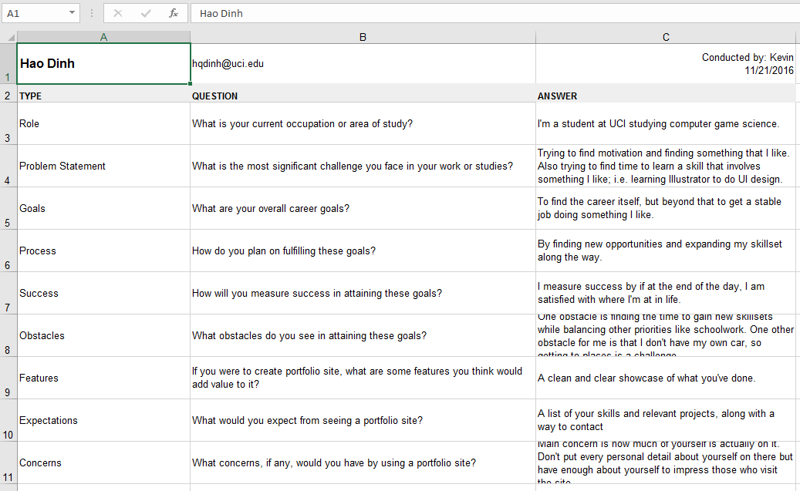
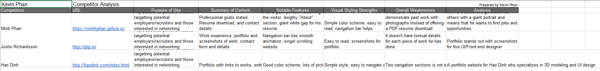
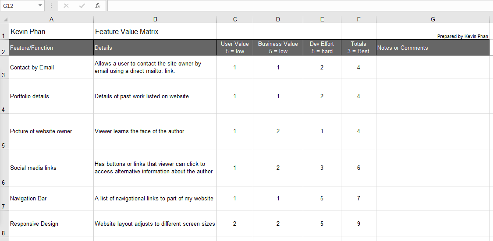
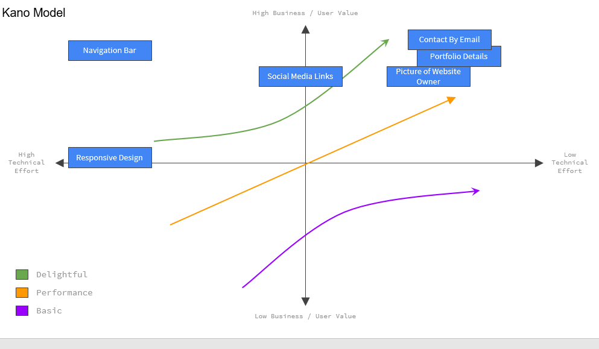
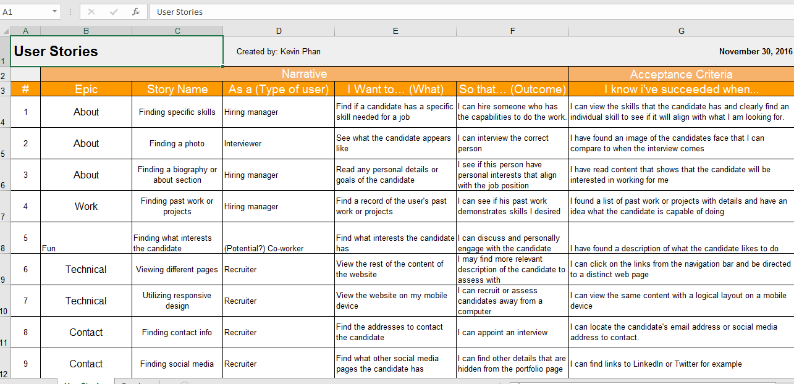
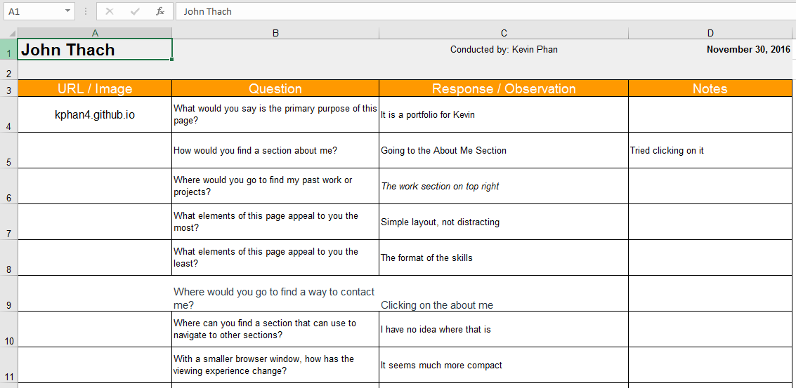
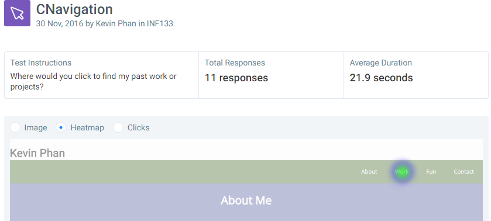

User Research and Testing
User Interviews
The user interviews are an essential part of user research. I use the interviews to understand the mindset of potential visitors of my website. While all of my interviewees were competitive students, they provided interesting ideas on what a portfolio website should feature. They validated the importance or appropriateness of my website’s content. The types of questions are important in user interviews because certain motivations or lack of it are not always apparent and they affect the answers given in the interview. For example, the students I interviewed may not reflect an accurate portrayal of someone from the hiring industry, who has their own biases.
Read moreCompetitor Analysis
Competitor analysis complements with the user interviews. Competitor analysis is an evaluation of the strengths and weaknesses of competitors’ products and then comparing the findings to my product. My website can benefit from evaluating other people’s portfolio websites. Their websites may signal whether I need to add more content or change the aesthetics. I chose to review other students’ websites from my classroom to see how I fare in creating my website. I reviewed a professional’s website to see if there were any inspirations to be found that were relevant to a hiring manager.
Read MoreFeature Value Matrix
Feature value matrixes provides a road-map on what features to focus on. It defines a criterion for valuing features or recommendations of a product, such as my portfolio website. Feature value matrixes are most useful when business needs are a factor in calculating values of features. The features I have chosen are based on what I think would be important to my targeted audience: hiring managers and recruiters. The most important features are about providing relevant content to the recruiting process. Few of the features were technical in design to ensure that the website is usable.
Read MoreFeature Prioritization
Feature prioritization is a graphic that shows a hierarchy of features and where each feature is positioned relative to others. Essentially, the most important features that must be finished are grouped closely together. I prioritized my features or set their positions on the graphic based on the scores given in the feature value matrix. This feature prioritization graphic is incorporated into building the interface by showing which features must be prioritized or which features can be quickly finished. I can quickly review the graphic to find if there is a pattern found in business needs.
Read MoreUser Stories
The importance of stories is reflecting about how different types of users use my portfolio website. The benefits include discovering usability needs and understanding the strengths and weaknesses of an interface. I creatively thought about the types of stories or epics that certain users will take part in. I created the stories by first brainstorming on what types of users would visit a portfolio website. I mostly thought about why I would visit such websites as someone from HR. Afterwards, I used my feature value matrix to identify stories and epics that were yet to be created.
Read MoreCognitive Walkthrough
In a cognitive walkthrough, new users perform a series of tasks and are given a set of questions to answer. An evaluator would guide the new users, asking questions and recording the interactions between the user and the product. The activity aims to discover usability issues of an interactive system, emphasizing on the interactions with a new user. Some of the challenges I faced had to do with the quality of my questions. A tester may not understand me. The questions did not provoke a deep or insightful answer about the interactions because the questions were shallow in testing.
Read MoreTask Based Tests
The types of tests conducted were the question test and the click test. I chose the click test to see whether my navigation bar was effective and understandable. I used the question test to ask questions about the aesthetics of my website. Those tests were the most effective to write. The challenges I faced was not having grammatically coherent questions, so I risked getting answers from confused testers. As for the test results, testers revealed that my website is readable, however there were a lot of white space that should be removed. The navigation was simple according to my testers.
Results of First TestResults of Second Test
Summary of Findings
From my user research, I gathered information that suggested that portfolio should be an online display of a resume. A list of skills, work, and professional related details should be provided for visitors to read. The user research encouraged me to pay more attention to the quality of questions I give to testers or interviewees because sometimes I wanted insightful questions. Some users would provide brief answers. The competitor analysis revealed that aesthetics matter and that my design and type of content was similar to others. The feature prioritization showed that the business needs, such as the project content, defined the most important parts of the website. The user stories justified usable content. The cognitive walkthrough and the tests showed how my interface needs to be improved in typography, formatting, and visual experience.
From my findings from the user research and user testing, I can draw a conclusion that my website has the appropriate content for a portfolio website. However, the website could be improved in terms of aesthetics. The entire procedure of user research and testing helped understand how my interface can be improved. The activities involving other people to test my website, such as the cognitive walkthrough and user tests, showed information that were generally harder to obtain. For example, people revealed which parts of my website did not provide a good experience and how long it takes them to learn and test the interface (usually 30 seconds). The information gathered will guide me when improving the usability of my website.
Incorporation of Findings
I haven’t implemented any changes since the first prototype has been finished. I will discuss my plans for changes instead. Based on my findings, my solutions need to address the problems that my users and testers have identified. Because my testers have shown that my skills section are not aligned properly depending on the browser size, I would need to revisit and decide if it is better to change its orientation to left sided or keep it centered. I didn’t expect that centering a list of words could be unappealing. Based on other people’s research, my skills section could be improved by adding details on what I have used each skill.
While my layout was simple and usable, there were problems with how much white space there are on my website and the color transitions. At first, I wanted to provide an interface with clearly defined sections using contrasting colors using a color scheme. However, I found it difficult to fill up sections with content, which left a lot of white space. Another consequence was that the differing background color was jarring for few to scroll through because the colors were sometimes too dark and varying. I would fix the problem by making the text size bigger to fix the gaps and use muted colors for the background to make the interface look smoother when scrolling.